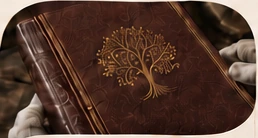
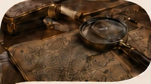

01Книги
Родословные книги для историй, фотографий и памяти нескольких поколений.
Формы семейной памяти
Основные направления, в которых семейные материалы обретают цельную форму и становятся частью семейного наследия.

01Родословные книги для историй, фотографий и памяти нескольких поколений.

02Работа с историей рода и материалами, которые важно сохранить для семьи.
 03
03Наглядное представление родственных связей и структуры семьи.
 04
04Организация семейных материалов в едином цифровом пространстве.
Каталог книг уже доступен полностью, а состав будущего проекта можно обсудить отдельно.
Открыть каталог